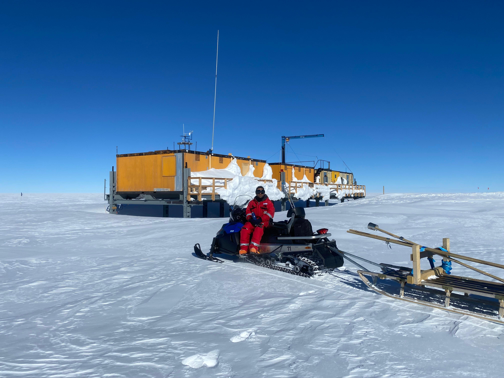
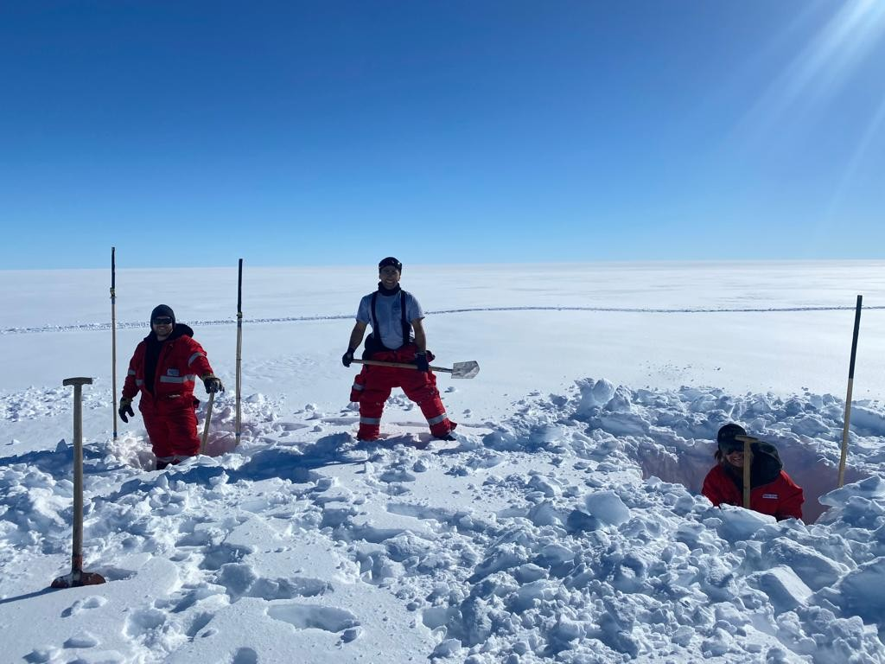
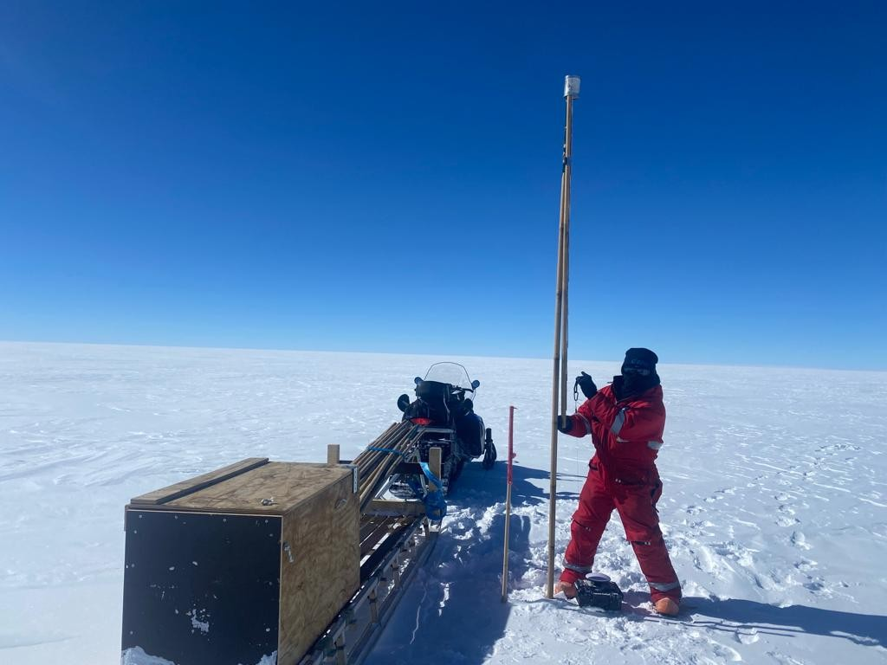
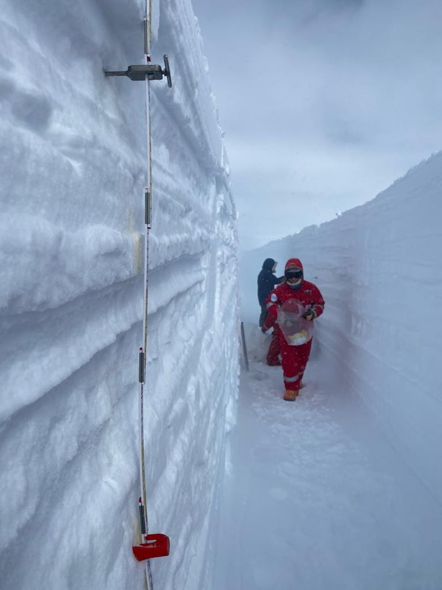
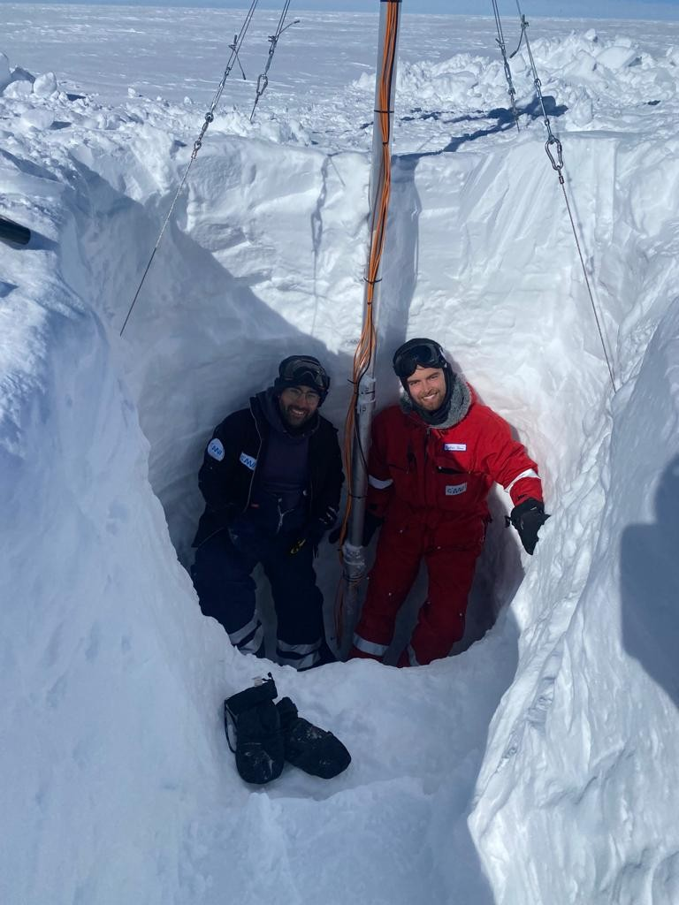
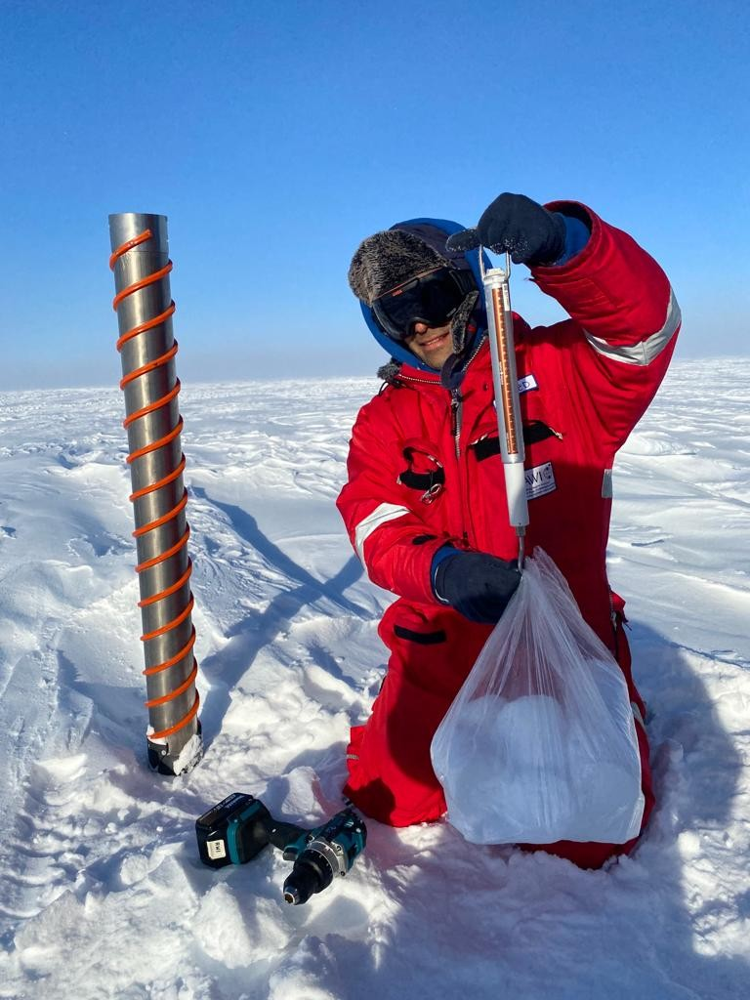
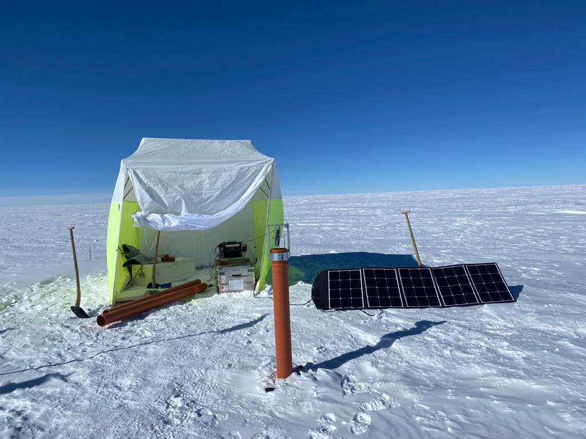
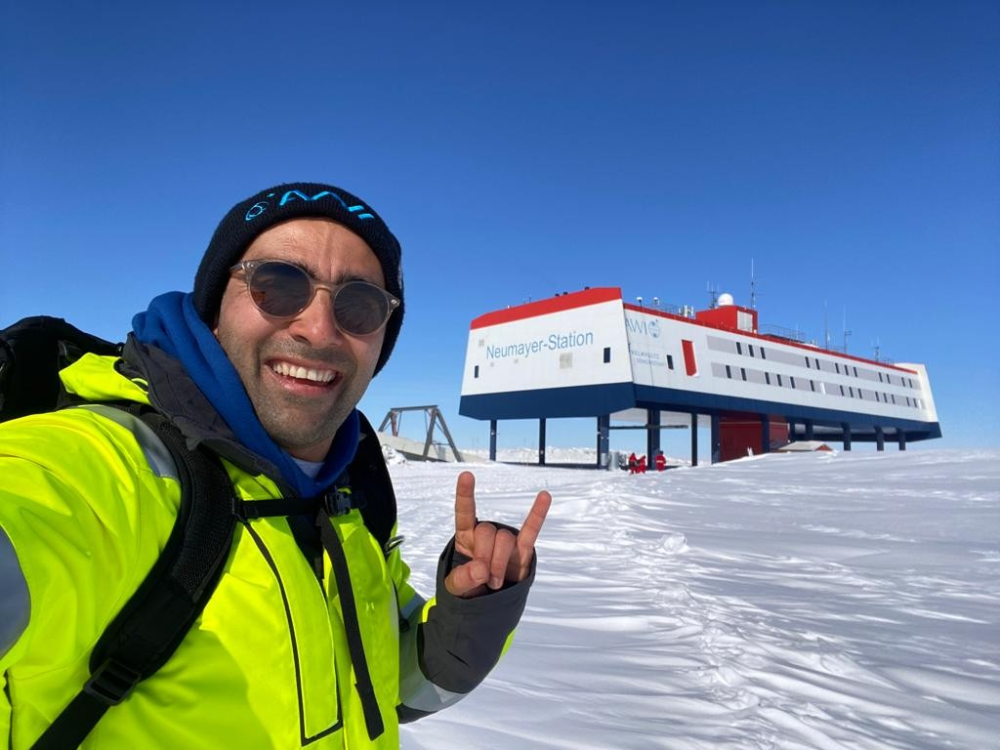

Field Experience

arrival at Kohnen Station, after 760 km skidoo ride performing stake measurements from Neumayer III

digging out an ApRES radar over the grounding line, to service, download data, and change battery.

stake measurements (measured 1124 stakes, planted 411 new ones)

snow sampling trench, Dronning Maud Land

digging out an old AWS

snow density measurement, over the tranverse NM III - Kohnen

tent with the borehole thermometry equipment

by Neumayer lll station

traverse from Neumayer III to Kohnen station by Skidoo
Participated in an Antarctic expedition to gather varied sets data. Worked closely with a multidisciplinary team, and stayed at 3 different stations.
Copyright © 2024 Hameed Moqadam. All rights reserved.